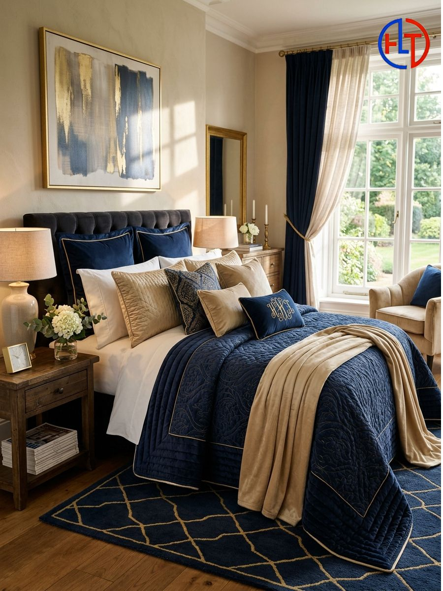
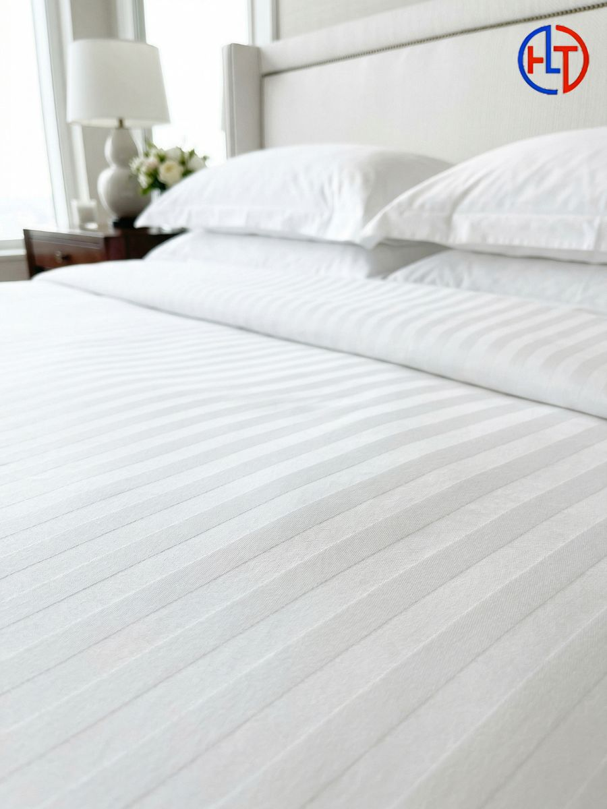
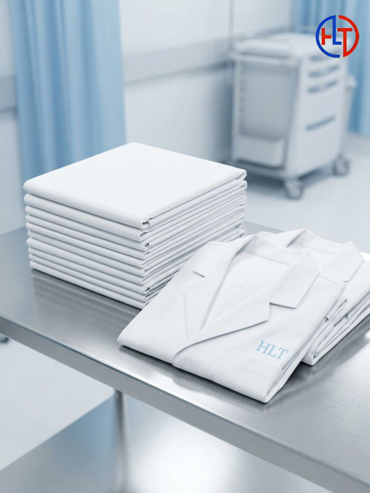
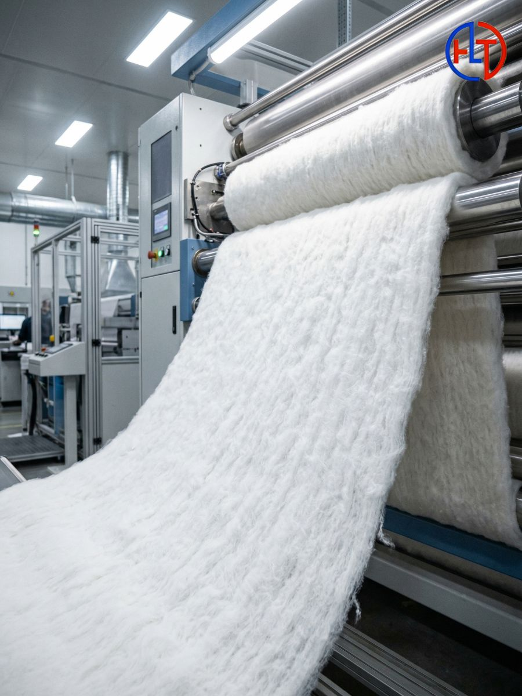
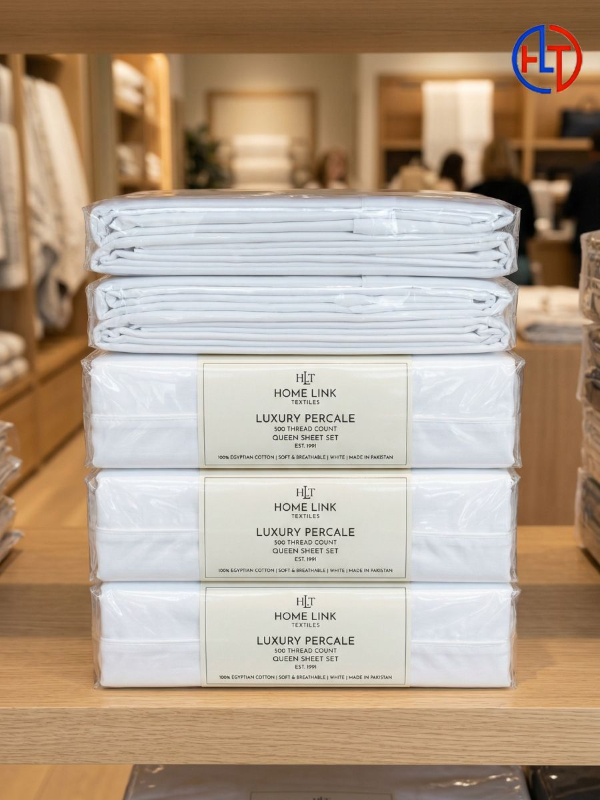
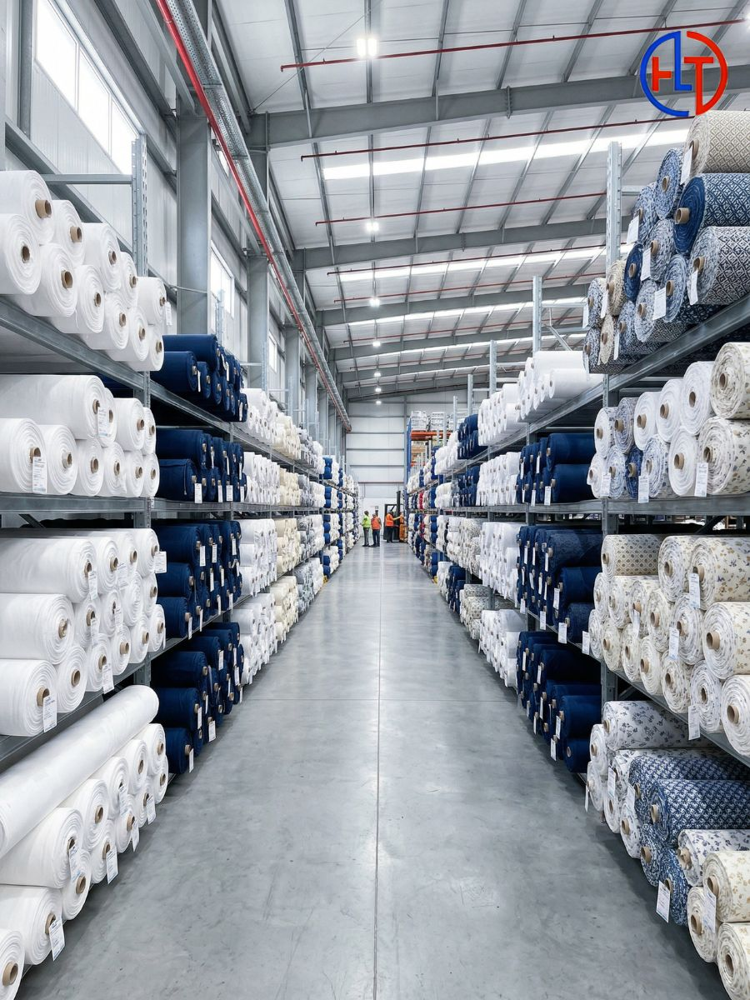

Premium Home Textile Manufacturing for Global Buyers
Home Link Textiles is a dedicated textile manufacturer and exporter serving home furnishing, hotel linen, hospital linen, fabrics, quilted products, and custom cotton wadding requirements.
Built for bulk supply, repeat orders, and long-term buyer relationships.
From raw fabrics and fillings to finished bedding and institutional linen, we operate as a one-stop sourcing partner.
In Pursuit of Excellence
Home Link Textiles is the name of quality. Our goal is to provide a one-stop shop to our respected buyers with competitive prices, exquisite quality, and diligent service—all under one roof.
What We Do
We are an export-oriented house that manufactures textiles to meet the requirements of all buyers. We specialize in home furnishing textiles, hotel and hospital linen, and garments. We are specialists in bed spreads and pillow protectors with different GSM fillings.
The Pakistan Advantage
Operating in "The Land of White Fiber", we leverage the fact that Pakistani yarns in 10’s to 40’s counts are among the best in the world due to medium staple length. We are on a continuous journey towards value addition from export of raw cotton to stitched products.
Premium Textile Lines
Explore our specialized manufactured lines for hospitality, healthcare, and retail sectors. We accommodate custom GSM filling and exact buyer specifications.






Production depth that supports serious buyer requirements
Weaving
180 Sulzer and auto looms (153”, 130”, 110”) supporting grey fabric production at scale.
Inspection
Grey and processed fabrics are heavily inspected before onward supply for quality consistency.
Quilting
Computerized single and multi-needle quilting machines with 350+ patterns.
Stitching
150+ machines under one roof support garments, standard products, and fancy textiles.
Packing
Dedicated teams inspect and pack products according to exact buyer standards.
Committed to International Standards
Our Quality Approach
- Meticulous inspection of grey and processed fabrics before final supply.
- Production handled according to strict customer requirements.
- Professional packing personnel support shipment consistency.
- Integrated control over filling, quilting, and finished presentation.
Compliance Readiness
Home Link Textiles is committed to maintaining high production standards and transparent quality practices to meet the expectations of international buyers. Our manufacturing and inspection processes are designed to support globally recognized compliance frameworks commonly required in international textile trade.
Looking for a dependable textile manufacturer?
Whether you need home textiles, hotel linen, hospital products, or cotton wadding, Home Link Textiles is positioned to support commercial supply with speed, flexibility, and practical pricing.
Buyer-Oriented Support
- Bulk production inquiries
- Private label / OEM requirements
- Hotel and hospital supply tenders
- Fabric and cotton wadding sourcing